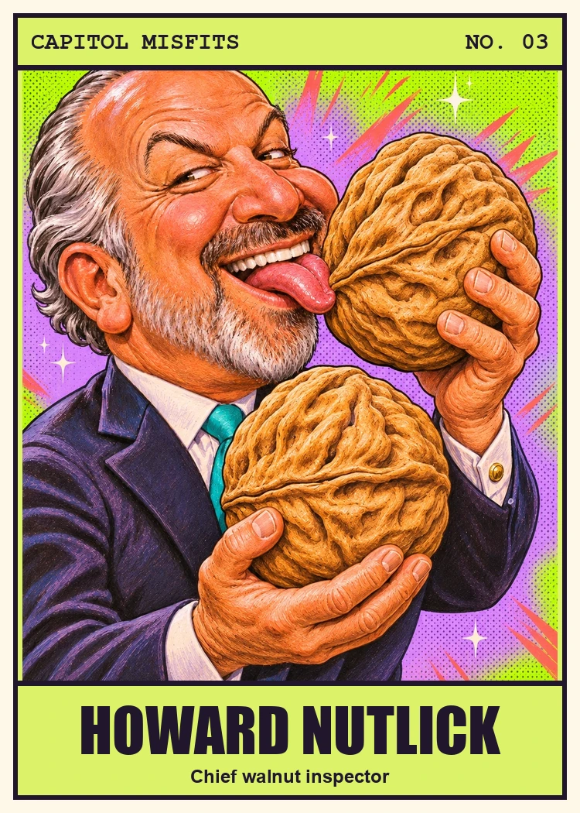

Capitol Misfits No. 03
Howard Nutlick
Howard brought two giant walnuts to the taste test. He’ll get around to cracking them eventually.
Made-up stats
- Walnuts on hand
- 2
- Quality-control licks
- 27
- Napkins on hand
- 0
Real facts about Howard Lutnick
- Lutnick was sworn in as U.S. secretary of commerce on February 21, 2025.